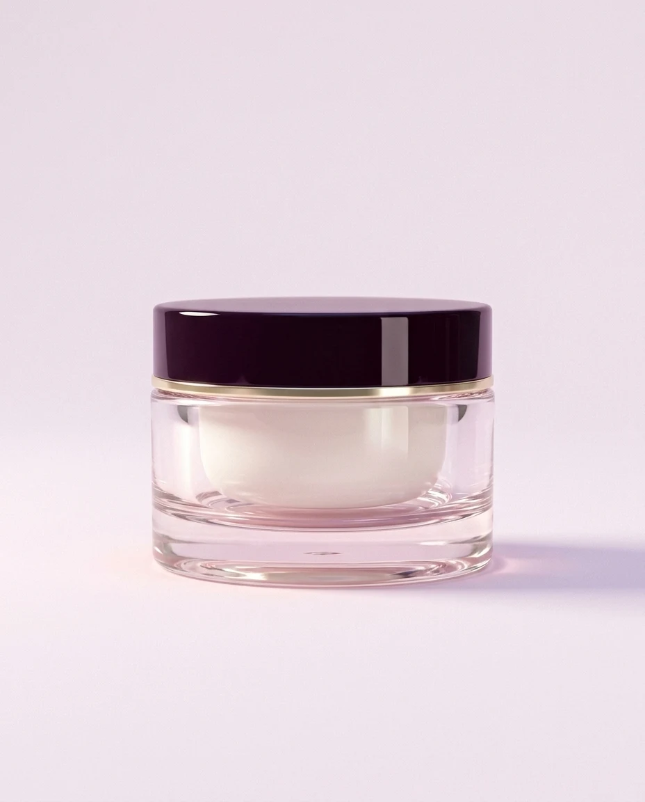
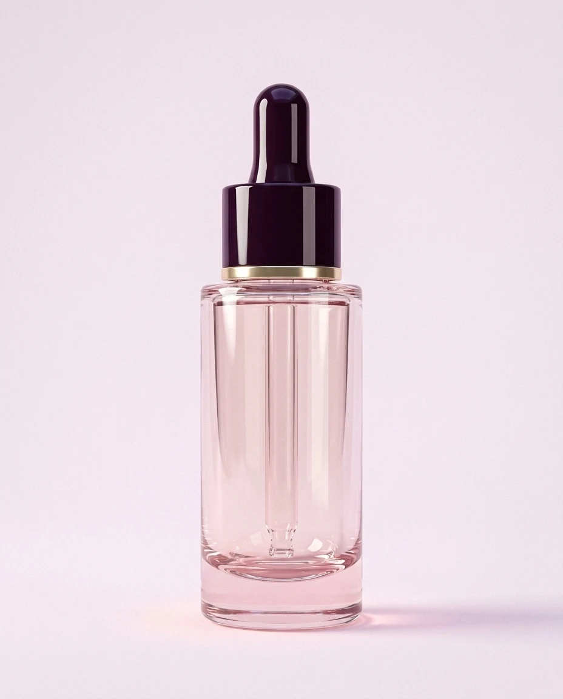
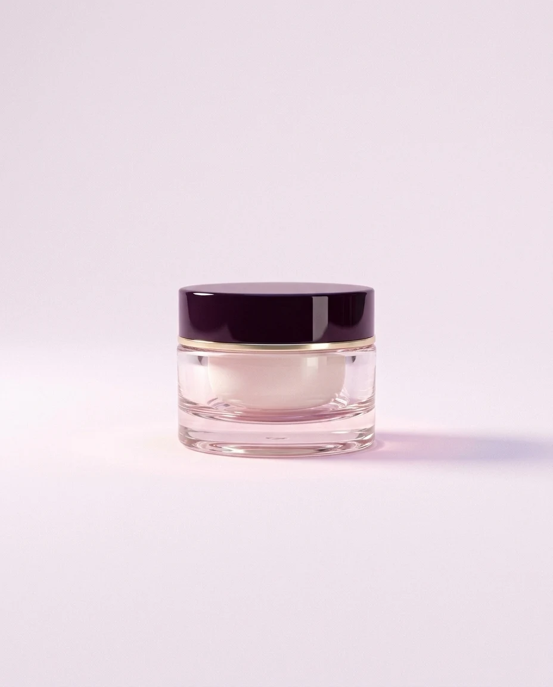
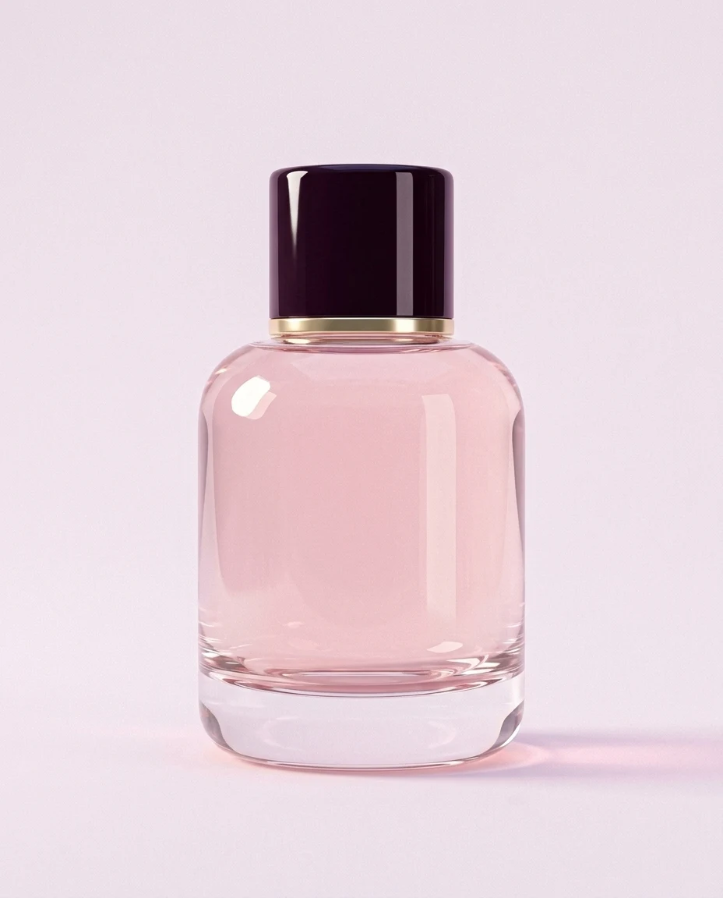

Renewal Cream
Peony · Hyaluronic acid
$128Peony skincare · Small batches
A renewal cream made with peony extract and hyaluronic acid, in a crystal jar you'll want to keep.
The flower
We pick our peonies early in the morning, when the petals hold the most water, and press them the same day. The extract keeps everything the flower had.
The cream
Hyaluronic acid holds water in your skin from morning to night.
Fine lines look softer after four weeks of daily use.
Peony extract takes the edge off redness.
The texture
It feels light when you pick it up and sinks in as soon as it touches warm skin. No film and no shine, just soft skin under your makeup.
The line
The cream is the heart of it. Add the serum in the morning, the eye balm at night and the oil when your skin asks for more.
The line
Every piece comes in the same heavy crystal with a lacquer cap, and every one of them can be refilled.

Peony · Hyaluronic acid
$128
Peony · Niacinamide
$96
Peony · Caffeine
$72
Peony · Rosehip
$88